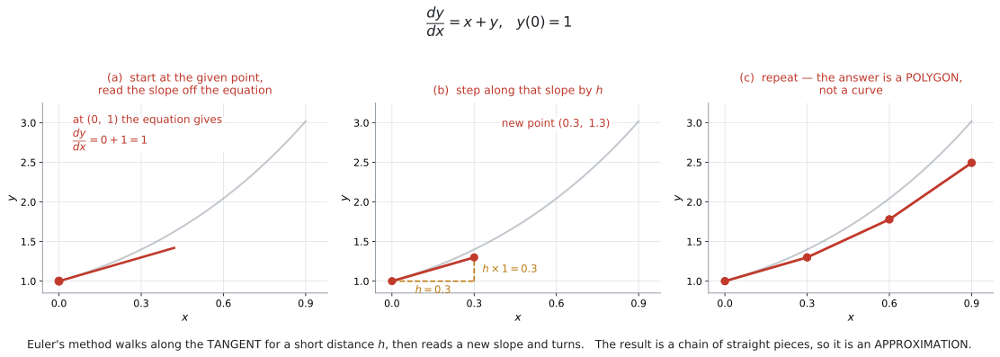
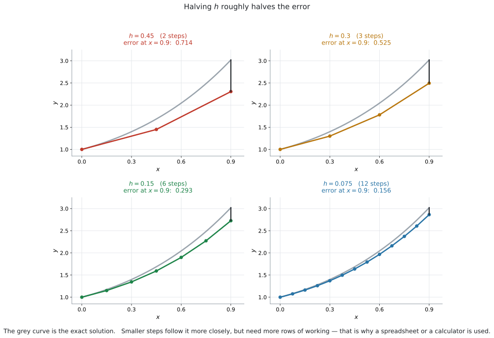
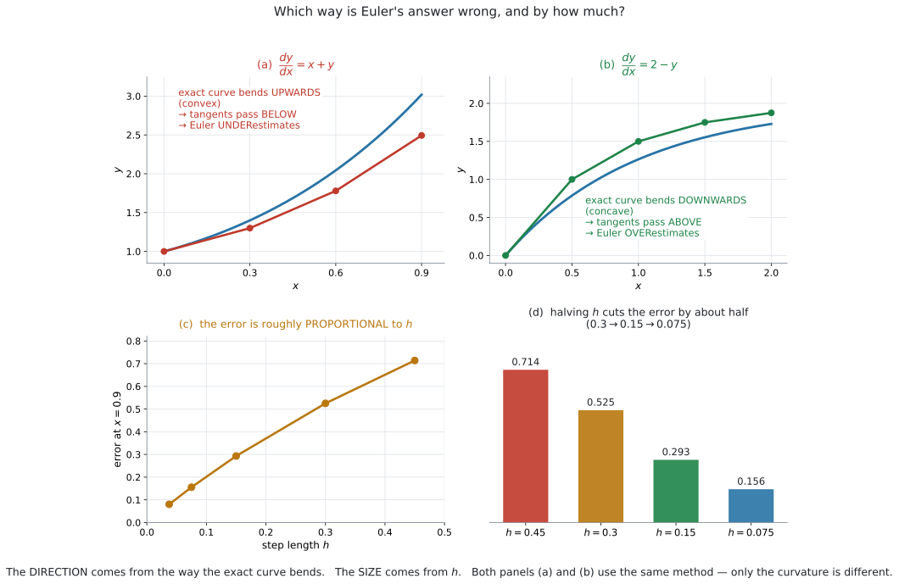
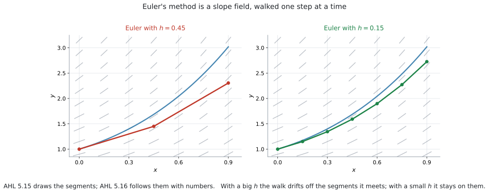

AHL 5.16a — Euler’s method（オイラー法）
- Euler’s method（オイラー法）が何をしているか、ことばで説明できる。
- 公式集の式を使って、\(1\) 歩ずつ表を作れる。
- step length（刻み幅）\(h\) の意味が分かる。
- 出た値が approximation（近似値）であることを説明できる。
- 誤差がどちら向きに、どれくらい出るかを説明できる。
- スプレッドシートや GDC で、歩数の多い計算ができる。
AHL 5.14 で式で解き、AHL 5.15 で絵で見ました。 このページは \(3\) つ目、数値で追う方法です。
Euler’s method は、slope field を「数で歩く」ものです。 絵で見ていたことを、そのまま計算にします。
シラバスは、この項目にこう書いています。
Content: Euler’s method for finding the approximate solution to first order differential equations. Numerical solution of \(\dfrac{dy}{dx} = f(x,\ y)\).
Guidance: Spreadsheets should be used to find approximate solutions to differential equations. In examinations, values will be generated using permissible technology.
approximate——近似です。ぴったりの答えは出ません。 そこがこの項目の要点でもあります。
The idea
1. 傾きが分かれば、少し先が予想できます
AHL 5.15 で見たように、微分方程式はどの点でも傾きを教えてくれます。
\[ \frac{dy}{dx} = x + y \]
点 \((0,\ 1)\) なら、傾きは \(0 + 1 = 1\) です。
では、そこから少しだけ進んだ先の \(y\) は、いくつでしょうか。
正確には分かりません。しかし、傾き \(1\) でまっすぐ進んだとすれば、見当はつきます。\(x\) が \(0.3\) だけ増えれば、\(y\) は \(1 \times 0.3 = 0.3\) 増えて \(1.3\) です。

図 1 の (a) と (b) が、この \(1\) 歩です。
そして、着いた先でもう一度、傾きを聞きます。 新しい点 \((0.3,\ 1.3)\) での傾きは \(0.3 + 1.3 = 1.6\) です。今度はその向きに進みます。
これをくり返すのが Euler’s method です。 (c) のように、答えは折れ線になります。
図 1 の (d) を見てください。本当の解は曲がっているのに、Euler はまっすぐ進みます。
そのため、角を内側に切ってしまいます。 これが誤差です。
\[ \text{Euler の答え} \neq \text{正確な答え} \]
「近似値です」と言えることが、この項目では大事です。
ある点での接線は、その点の近くで曲線とよく似ています。
Euler’s method は、その接線を少しだけたどって、また新しい接線に乗りかえる、というくり返しです。
「少しだけ」が \(h\) です。 \(h\) が小さいほど、接線から離れる前に乗りかえられます。
2. 公式の読み方
\[ y_{n+1} = y_n + h \times f(x_n,\ y_n), \qquad x_{n+1} = x_n + h \]
記号が多く見えますが、言っていることは \(1\) つです。
| 記号 | 意味 |
|---|---|
| \(n\) | 何歩目か（\(0\) 歩目、\(1\) 歩目、……） |
| \(x_n,\ y_n\) | \(n\) 歩目にいる点 |
| \(f(x_n,\ y_n)\) | その点での傾き（右辺に代入するだけ） |
| \(h\) | step length（刻み幅）。\(1\) 歩の横幅 |
| \(h \times f(x_n,\ y_n)\) | \(1\) 歩で \(y\) が増える量 |
ことばにすると、こうなります。
\[ (\text{次の } y) = (\text{今の } y) + (\text{横に進む幅}) \times (\text{今の傾き}) \]
\(f(x,\ y)\) は、微分方程式の右辺そのものです。
\(\dfrac{dy}{dx} = x + y\) なら \(f(x,\ y) = x + y\)、\(\dfrac{dy}{dx} = 2 - y\) なら \(f(x,\ y) = 2 - y\) です。
新しく何かを求める必要はありません。 今いる点の \(x\) と \(y\) を、右辺に入れるだけです。
公式には \(2\) 本の式があります。\(y\) だけ進めて \(x\) を置き去りにすると、次の歩の傾きが間違います。
\[ x_{n+1} = x_n + h \]
右辺に \(x\) が入っていない微分方程式（たとえば \(\dfrac{dy}{dx} = 2 - y\)）なら \(x\) を使わずに済みますが、\(\dfrac{dy}{dx} = x + y\) のような式では、\(x\) がずれると全部ずれます。
3. 表にすると間違えません
手で歩くときは、必ず表を作ってください。 頭の中でやると、どこかで \(h\) を掛け忘れます。
列は、\(n\) を入れて \(5\) つです。慣れたら \(h \times f\) の列は省いて、\(4\) つでも構いません。
| \(n\) | \(x_n\) | \(y_n\) | \(f(x_n,\ y_n)\) | \(h \times f\) |
|---|---|---|---|---|
| \(0\) | \(0\) | \(1\) | \(0 + 1 = 1\) | \(0.1\) |
| \(1\) | \(0.1\) | \(1.1\) | \(0.1 + 1.1 = 1.2\) | \(0.12\) |
| \(2\) | \(0.2\) | \(1.22\) | \(0.2 + 1.22 = 1.42\) | \(0.142\) |
| \(3\) | \(0.3\) | \(1.362\) |
読み方はこうです。 いちばん右の \(h \times f\) を、\(1\) つ下の行の \(y\) に足します。
\[ 1 + 0.1 = 1.1, \qquad 1.1 + 0.12 = 1.22, \qquad 1.22 + 0.142 = 1.362 \]
例 1 で、この表をゼロから作ります。
表を作り終えたら、求められている \(x\) の行を見ます。上の表なら \(x = 0.3\) の行で、\(y \approx 1.362\) です。
\(h \times f\) の列は、答えではありません。 途中の計算です。
4. 刻み幅 \(h\)

図 2 の \(4\) 枚は、同じ微分方程式を、\(h\) だけ変えて解いたものです。
| \(h\) | 歩数（\(x = 0.9\) まで） | \(x = 0.9\) での誤差 |
|---|---|---|
| \(0.45\) | \(2\) | \(0.714\) |
| \(0.3\) | \(3\) | \(0.525\) |
| \(0.15\) | \(6\) | \(0.293\) |
| \(0.075\) | \(12\) | \(0.156\) |
\(h\) を小さくすると正確になりますが、歩数が増えます。 \(h\) を半分にすれば、歩数は \(2\) 倍です。
\[ (\text{歩数}) = \frac{(\text{進みたい幅})}{h} \]
「\(x = 0\) から \(x = 0.3\) まで、\(h = 0.1\) で」なら、\(3\) 歩です。
\[ \frac{0.3 - 0}{0.1} = 3 \]
表の行は、\(n = 0,\ 1,\ 2,\ 3\) の\(4\) 行になります。行の数と歩数は \(1\) 違います。
\(n = 3\) の行まで書いて、そこで止めてください。\(4\) 歩目を進むと、\(x = 0.4\) まで行ってしまいます。
自分で決めることはありません。with step length \(h = 0.2\) のように書かれています。
指定された \(h\) を、そのまま使ってください。
5. 誤差の向きと大きさ

向きは、解曲線の曲がり方で決まります。
図 3 の (a) と (b) を見くらべてください。
| 解曲線の曲がり方 | 接線の位置 | Euler の答え |
|---|---|---|
| 上に曲がる（convex、下に凸） | 曲線の下を通る | 小さめに出る |
| 下に曲がる（concave、上に凸） | 曲線の上を通る | 大きめに出る |
大きさは \(h\) で決まります。 表 4 のとおり、\(h\) にほぼ比例します。
解曲線が途中で convex から concave に変わると、ずれの向きも変わることがあります。
AI HL で出るのはほとんどが曲がり方の変わらない場面ですが、Explain why と問われたら、見ている区間での曲がり方を根拠にしてください。
グラフが与えられていれば、見れば分かります。
式で言うなら、second derivative（\(2\) 階導関数）が正なら convex です。second derivative そのものはシラバスの AHL 5.10 で扱います（convex / concave という語は、シラバスには出てきません。誤差の向きを説明するための道具として使っています）。
\[ \frac{d^2y}{dx^2} > 0 \ \Longrightarrow \ \text{convex（下に凸）} \]
\(y = 2e^x - x - 1\) なら \(\dfrac{d^2y}{dx^2} = 2e^x > 0\) で、いつでも convex です。だから 図 3 の (a) は、ずっと小さめに出ます。
Euler の答えは近似です。
Find an approximation for \(y\) when \(x = 0.3\) と問われたら、\(y \approx 1.362\) のように \(\approx\) で書きます。
Comment on the accuracy of your answer と問われたら、こう書きます。
書くことは \(3\) つです。 ①近似であること、②どちら向きにずれるか（曲がり方を根拠に）、③どうすればよくなるか。
次は、解曲線が convex の場合の書き方です。
試験ではこう書く
The value is only an approximation, because Euler’s method replaces the curve by a chain of straight line segments. The exact solution curve bends upwards, so the tangent segments lie below it and the estimate is too small. Using a smaller step length \(h\) would reduce the error.
（この値は近似にすぎない。Euler 法は曲線を直線のつながりで置きかえているからである。正確な解曲線は上に曲がっているので、接線は曲線の下を通り、推定値は小さすぎる。刻み幅 \(h\) を小さくすれば誤差は減る、という意味です。）
concave のときは、②だけを入れかえます。 bends downwards → tangent segments lie above it → the estimate is too large です（表 5）。
6. slope field の上を歩いています

図 4 は、AHL 5.15 の slope field の上に、Euler の折れ線を重ねたものです。
やっていることは同じです。線分の向きに進む——それを絵でやるのが 5.15、数でやるのが 5.16 です。
\(h\) が大きいと、途中で出会う線分を無視して進んでしまいます。\(h\) が小さければ、線分に沿ったまま進めます。
表を作ったあとで、その値が場の絵と合っているかを見てください。
たとえば場が右上がりばかりなのに \(y\) が減っていたら、どこかで計算を間違えています。\(30\) 秒でできる検算です。
7. スプレッドシートと、試験での扱い
シラバスの Guidance が、はっきり書いています。
Spreadsheets should be used to find approximate solutions to differential equations.
In examinations, values will be generated using permissible technology.
歩数が多い問題は、手では解きません。 スプレッドシートか GDC を使います（GDC 第1節）。
それでも、このページではまず手で \(2\)〜\(3\) 歩たどります。
式に何を入れているのかが分かっていないと、電卓の出した数が正しいかどうか判断できないからです。手で \(3\) 歩できれば、\(300\) 歩は電卓に任せられます。
Why it works
なぜ「傾き × 幅」を足してよいのか
SL 5.1 で、導関数はこう定義されました。
\[ \frac{dy}{dx} = \lim_{h \to 0} \frac{y(x+h) - y(x)}{h} \]
\(h\) が小さいときは、極限を取る前の式でも近いはずです。
\[ \frac{dy}{dx} \approx \frac{y(x+h) - y(x)}{h} \]
両辺に \(h\) を掛けて、\(y(x+h)\) について解きます。
\[ y(x+h) \approx y(x) + h \times \frac{dy}{dx} \]
右辺の \(\dfrac{dy}{dx}\) を、微分方程式が教えてくれます。 それが \(f(x,\ y)\) です。
\[ y(x+h) \approx y(x) + h \times f(x,\ y) \]
これが 式 1 そのものです。公式は、導関数の定義を「途中で止めた」だけです。
なぜ誤差は \(h\) に比例するのか
\(1\) 歩あたりの誤差は、\(h^2\) に比例します。接線と曲線の離れ方が、\(h\) の \(2\) 乗で効いてくるからです（曲がり方が \(\dfrac{d^2y}{dx^2}\) で決まるため）。
いっぽう、決まった幅 \(X\) を進むのに必要な歩数は \(\dfrac{X}{h}\) です。
\[ (\text{全体の誤差}) \approx (\text{1 歩の誤差}) \times (\text{歩数}) \approx h^2 \times \frac{X}{h} = hX \]
\(h\) の \(1\) 乗が残ります。 だから \(h\) を半分にすると、誤差もおよそ半分になります（表 4）。
この計算は AI HL では問われません。 「\(h\) を小さくすれば誤差が減る」と言えれば十分です。
なぜ \(2\) 乗が \(1\) 乗になるのかが気になった人のために書いてあります。
誤差は、たまってから減りません
\(1\) 歩目でずれると、\(2\) 歩目はずれた点から始まります。そこで読む傾きも、本当の傾きではありません。
つまり、誤差は歩くほどたまります。 図 1 の (d) で、右へ行くほど差が開いているのは、そのためです。
だから、「\(x = 5\) での値を \(h = 1\) で」のような問題では、答えはかなり粗くなります。 近似だと言い添えてください。
Worked examples
問題文は英語です。意味が理解できなかったら、問題文の下の「日本語訳」を開いてください。解説は日本語です。
例題 1 Consider the differential equation \(\dfrac{dy}{dx} = x + y\) with \(y = 1\) when \(x = 0\).
(a) Use Euler’s method with a step length of \(h = 0.1\) to find an approximation for \(y\) when \(x = 0.3\).
(b) The exact solution is \(y = 2e^{x} - x - 1\). Find the exact value of \(y\) when \(x = 0.3\).
(c) Find the error in the approximation.
日本語訳
微分方程式 \(\dfrac{dy}{dx} = x + y\) を考えます。\(x = 0\) のとき \(y = 1\) です。
step length は「刻み幅」、an approximation は「近似値」という意味です。
(a) 刻み幅 \(h = 0.1\) の Euler 法を使って、\(x = 0.3\) のときの \(y\) の近似値を求めなさい。
(b) 正確な解は \(y = 2e^{x} - x - 1\) です。\(x = 0.3\) のときの \(y\) の正確な値を求めなさい。
(c) 近似値の誤差を求めなさい。
(a) \(f(x,\ y) = x + y\) です。\(x = 0\) から \(x = 0.3\) まで、\(h = 0.1\) なので \(3\) 歩です（第4節）。
\(n = 0\)： \(x_0 = 0\)、\(y_0 = 1\)
\[ f(0,\ 1) = 0 + 1 = 1 \]
\[ y_1 = 1 + 0.1 \times 1 = 1.1, \qquad x_1 = 0.1 \]
\(n = 1\)：
\[ f(0.1,\ 1.1) = 0.1 + 1.1 = 1.2 \]
\[ y_2 = 1.1 + 0.1 \times 1.2 = 1.22, \qquad x_2 = 0.2 \]
\(n = 2\)：
\[ f(0.2,\ 1.22) = 0.2 + 1.22 = 1.42 \]
\[ y_3 = 1.22 + 0.1 \times 1.42 = 1.362, \qquad x_3 = 0.3 \]
\[ y \approx 1.362 \quad (x = 0.3 \text{ のとき}) \]
(b)
\[ y = 2e^{0.3} - 0.3 - 1 = 2(1.34985\ldots) - 1.3 = 1.39972 \]
\(3\) 桁で \(1.40\) です。
(c)
\[ 1.39972 - 1.362 = 0.0377 \]
検算。 Euler の答え \(1.362\) は、正確な値 \(1.400\) より小さく出ています ✓ \(y = 2e^x - x - 1\) の \(2\) 階微分は \(2e^x > 0\) で convex なので、表 5 のとおり小さめになるはずです。向きが合っています。
\(2\) 歩目の傾きは \(0.1 + 1.1\) です。\(0 + 1.1\) ではありません。
\(x\) も \(h\) ずつ増えます（第2節）。
この例題はきれいな数ですが、そうでないときは電卓の ans を使ってつなげます（GDC 第2節）。
\(3\) 桁に丸めながら \(10\) 歩進むと、丸めの誤差が Euler の誤差に上乗せされます。
(a)
| \(n\) | \(x_n\) | \(y_n\) | \(f(x_n, y_n)\) |
|---|---|---|---|
| \(0\) | \(0\) | \(1\) | \(1\) |
| \(1\) | \(0.1\) | \(1.1\) | \(1.2\) |
| \(2\) | \(0.2\) | \(1.22\) | \(1.42\) |
| \(3\) | \(0.3\) | \(1.362\) |
\[ y \approx 1.36 \quad (3 \text{ s.f.}) \]
(b) \[ y = 2e^{0.3} - 0.3 - 1 = 1.40 \quad (3 \text{ s.f.}) \]
(c) \[ \text{error} = 1.39972 - 1.362 = 0.0377 \]
例題 2 The same differential equation \(\dfrac{dy}{dx} = x + y\) with \(y(0) = 1\) is solved again, this time with \(h = 0.05\).
This gives \(y \approx 1.380\) when \(x = 0.3\).
(a) State how many steps are needed.
(b) The exact value is \(1.39972\). Show that halving the step length has roughly halved the error.
(c) Explain why a smaller step length gives a better approximation.
日本語訳
同じ微分方程式 \(\dfrac{dy}{dx} = x + y\)、\(y(0) = 1\) を、今度は \(h = 0.05\) で解きます。その結果、\(x = 0.3\) のとき \(y \approx 1.380\) となります。
(a) 必要な歩数を書きなさい。
(b) 正確な値は \(1.39972\) です。刻み幅を半分にすると誤差がおよそ半分になることを示しなさい。
(c) 刻み幅が小さいほうがよい近似になる理由を説明しなさい。
(a)
\[ \frac{0.3 - 0}{0.05} = 6 \ \text{歩} \]
(b) 例 1 の \(h = 0.1\) での誤差は \(0.0377\) でした。
\(h = 0.05\) での誤差は
\[ 1.39972 - 1.380 = 0.0197 \]
\[ \frac{0.0377}{0.0197} = 1.91 \approx 2 \]
およそ半分になっています。
(c) ことばで答える問いです。
試験ではこう書く
Euler’s method replaces the curve by straight segments, and each segment leaves the curve because the curve bends. A smaller step length means each straight segment is shorter, so it stays closer to the curve before a new slope is taken. The total error is therefore smaller.
（Euler 法は曲線を直線の区間で置きかえており、曲線が曲がるために各区間は曲線から離れていく。刻み幅が小さいほど各区間は短くなり、次の傾きを取るまでに曲線から離れる量が少ない。したがって全体の誤差も小さくなる、という意味です。）
検算。 \(h\) を半分にしたのに、誤差はちょうど半分にはなりません（\(1.91\) 倍で、\(2\) 倍ではありません）。「およそ」がついているのは、そのためです ✓ Why it works の見積もりも「およそ」です。
\(h\) を小さくすると歩数が増えます。\(h = 0.001\) なら \(300\) 歩です。
手では終わりません。 そこでスプレッドシートを使います（第7節）。
また、歩数が非常に多くなると、丸めの誤差が積み重なって、かえって悪くなることもあります。
(a) \[ \frac{0.3}{0.05} = 6 \ \text{steps} \]
(b) With \(h = 0.1\): \(\ 1.39972 - 1.362 = 0.0377\)
With \(h = 0.05\): \(\ 1.39972 - 1.380 = 0.0197\) \[ \frac{0.0377}{0.0197} = 1.91 \approx 2 \] So halving \(h\) has roughly halved the error.
(c)
A smaller step length means each straight segment is shorter, so it stays closer to the curve before a new slope is taken, and the total error is smaller.
例題 3 A metal block cools in a room. Its temperature \(\theta\ ^\circ\)C after \(t\) minutes satisfies
\[ \frac{d\theta}{dt} = -0.1(\theta - 20), \qquad \theta = 90 \text{ when } t = 0. \]
(a) Use Euler’s method with \(h = 1\) to estimate the temperature after \(3\) minutes.
(b) The exact temperature after \(3\) minutes is \(71.9\ ^\circ\)C, correct to \(3\) significant figures. Comment on the accuracy of your estimate.
日本語訳
金属の塊が部屋で冷えています。\(t\) 分後の温度 \(\theta\ ^\circ\)C は、上の微分方程式を満たします。\(t = 0\) のとき \(\theta = 90\) です。
(a) \(h = 1\) の Euler 法を使って、\(3\) 分後の温度を推定しなさい。
(b) \(3\) 分後の正確な温度は、有効数字 \(3\) 桁で \(71.9\ ^\circ\)C です。あなたの推定値の正確さについてコメントしなさい。
(a) \(f(t,\ \theta) = -0.1(\theta - 20)\) です。右辺に \(t\) が入っていませんが、やり方は同じです。
\(n = 0\)： \(t_0 = 0\)、\(\theta_0 = 90\)
\[ f = -0.1(90 - 20) = -0.1 \times 70 = -7 \]
\[ \theta_1 = 90 + 1 \times (-7) = 83, \qquad t_1 = 1 \]
\(n = 1\)：
\[ f = -0.1(83 - 20) = -6.3 \]
\[ \theta_2 = 83 + 1 \times (-6.3) = 76.7, \qquad t_2 = 2 \]
\(n = 2\)：
\[ f = -0.1(76.7 - 20) = -5.67 \]
\[ \theta_3 = 76.7 + 1 \times (-5.67) = 71.03, \qquad t_3 = 3 \]
\(3\) 分後、およそ \(71.0\ ^\circ\)C です。
(b)
試験ではこう書く
The estimate \(71.0\ ^\circ\)C is close to the exact value \(71.9\ ^\circ\)C, but it is too small by about \(0.9\ ^\circ\)C. The solution curve is convex, so the tangent segments lie below it. The step length \(h = 1\) is quite large compared with the \(3\) minutes being covered, so only three steps are taken; a smaller step length would give a closer estimate.
（推定値 \(71.0\ ^\circ\)C は正確な値 \(71.9\ ^\circ\)C に近いが、およそ \(0.9\ ^\circ\)C 小さすぎる。解曲線は下に凸なので、接線は曲線の下を通る。刻み幅 \(h = 1\) は、対象の \(3\) 分に対して大きく、\(3\) 歩しか進んでいない。刻み幅を小さくすれば、より近い推定値が得られる、という意味です。）
検算。 \(f\) が毎回負なので、温度は下がり続けるはずです。\(90 \to 83 \to 76.7 \to 71.03\) ✓ 熱いものは冷めるので、向きが合っています。
さらに、\(\theta\) は室温 \(20\) に近づくはずで、\(20\) を下回ってはいけません（AHL 5.14 の Newton’s law of cooling）。\(71.03 > 20\) ✓
\(h \times f = 1 \times (-7) = -7\) です。これを足します。 引くのではありません。
\[ \theta_1 = 90 + (-7) = 83 \]
公式は \(y_{n+1} = y_n + h \times f\) のままです。符号は \(f\) が持っています。
Comment on the accuracy は、近似の質を論じる問いです。\(3\) つ書けると安全です。
- 近いのか、離れているのか（数で）
- どちら向きにずれているかと、その理由
- どうすればよくなるか（\(h\) を小さくする）
(a)
| \(n\) | \(t_n\) | \(\theta_n\) | \(f = -0.1(\theta_n - 20)\) |
|---|---|---|---|
| \(0\) | \(0\) | \(90\) | \(-7\) |
| \(1\) | \(1\) | \(83\) | \(-6.3\) |
| \(2\) | \(2\) | \(76.7\) | \(-5.67\) |
| \(3\) | \(3\) | \(71.03\) |
\[ \theta \approx 71.0\ ^\circ\text{C} \]
(b)
The estimate \(71.0\ ^\circ\)C is about \(0.9\ ^\circ\)C below the exact value \(71.9\ ^\circ\)C. The solution curve is convex, so the tangent segments lie below it and Euler’s method underestimates. A smaller step length would give a closer estimate.
例題 4 Consider \(\dfrac{dy}{dx} = 2 - y\) with \(y = 0\) when \(x = 0\).
(a) Use Euler’s method with \(h = 0.5\) to find an approximation for \(y\) when \(x = 2\).
(b) The exact value is \(1.73\), correct to \(3\) significant figures. State whether Euler’s method has overestimated or underestimated, and explain why.
日本語訳
\(\dfrac{dy}{dx} = 2 - y\)、\(x = 0\) のとき \(y = 0\)、を考えます。
overestimated は「大きすぎる値を出した」、underestimated は「小さすぎる値を出した」という意味です。
(a) \(h = 0.5\) の Euler 法を使って、\(x = 2\) のときの \(y\) の近似値を求めなさい。
(b) 正確な値は有効数字 \(3\) 桁で \(1.73\) です。Euler 法が大きく出たか小さく出たかを述べ、その理由を説明しなさい。
(a) \(x = 0\) から \(x = 2\) まで、\(h = 0.5\) なので \(4\) 歩です。
\(f(x,\ y) = 2 - y\) で、\(x\) は右辺に入っていません。
| \(n\) | \(x_n\) | \(y_n\) | \(f = 2 - y_n\) | \(h \times f\) |
|---|---|---|---|---|
| \(0\) | \(0\) | \(0\) | \(2\) | \(1\) |
| \(1\) | \(0.5\) | \(1\) | \(1\) | \(0.5\) |
| \(2\) | \(1\) | \(1.5\) | \(0.5\) | \(0.25\) |
| \(3\) | \(1.5\) | \(1.75\) | \(0.25\) | \(0.125\) |
| \(4\) | \(2\) | \(1.875\) |
\[ y \approx 1.875 \]
(b) \(1.875 > 1.73\) なので、大きく出ています。
試験ではこう書く
Euler’s method has overestimated. The solution curve is concave, that is it bends downwards, so each tangent segment lies above the curve. Every step therefore lands slightly too high, and the errors build up.
（Euler 法は大きく見積もっている。解曲線は上に凸、つまり下向きに曲がっているので、各接線の区間は曲線の上を通る。したがって毎回わずかに高い位置に着き、その誤差が積み重なる、という意味です。）
検算。 この式は AHL 5.15 で見たとおり、\(y = 2\) が平衡解です。表の \(y\) は \(0 \to 1 \to 1.5 \to 1.75 \to 1.875\) と、\(2\) に近づいています ✓ 向きが合っています。
正確な解は \(y = 2 - 2e^{-x}\) で、\(\dfrac{d^2y}{dx^2} = -2e^{-x} < 0\) です。concave ✓ 表 5 のとおり大きめに出ます。
\(y\) が \(2\) に近づくと \(f = 2 - y\) が小さくなるので、歩幅の縦の伸びも小さくなります。
ただし \(h\) が大きすぎると、\(y = 2\) を飛び越えることがあります。 \(h = 1.5\) で \(1\) 歩目を計算してみてください。\(y_1 = 0 + 1.5 \times 2 = 3\) で、平衡解の反対側に出てしまいます。
\(h\) が大きすぎると、答えが場面に合わなくなります。
(a)
| \(n\) | \(x_n\) | \(y_n\) | \(f = 2 - y_n\) |
|---|---|---|---|
| \(0\) | \(0\) | \(0\) | \(2\) |
| \(1\) | \(0.5\) | \(1\) | \(1\) |
| \(2\) | \(1\) | \(1.5\) | \(0.5\) |
| \(3\) | \(1.5\) | \(1.75\) | \(0.25\) |
| \(4\) | \(2\) | \(1.875\) |
\[ y \approx 1.88 \quad (3 \text{ s.f.}) \]
(b)
Euler’s method has overestimated, since \(1.875 > 1.73\). The solution curve is concave, so each tangent segment lies above the curve and every step lands slightly too high.
Common errors
\(x_{n+1} = x_n + h\) も公式のうちです（第2節）。\(x\) が止まっていると、\(2\) 歩目から傾きが違います。
\(x = 0\) から \(x = 0.3\) まで \(h = 0.1\) なら \(3\) 歩、表は \(4\) 行です（第4節）。
\(n\) 歩目の傾きは、\(n\) 歩目の点 \((x_n,\ y_n)\) で計算します。\(1\) つ前の点ではありません。
\(3\) 桁に丸めながら進むと、丸めの誤差がたまります（例 1）。電卓の中で値をつないでください。
Euler の答えは近似です。\(\approx\) を使ってください（第5節）。
Explain why なら、接線が曲線の上を通るのか下を通るのかまで書きます（第5節）。
公式は足すままです。符号は \(f\) が持っています（例 3）。
\(3\) 歩でも、表を作ったほうが速くて確実です（第3節）。
Using your GDC (TI-Nspire CX II)
AHL 5.15 の Diff Eq のグラフは、Press-to-Test（試験モード）では使えませんでした。
Lists & Spreadsheet は使えます。 ですから、ここで説明する方法は試験でもそのまま使えます。
Lists & Spreadsheet で表を作る
シラバスが “Spreadsheets should be used” と書いている方法です。
ctrl + doc → Add Lists & Spreadsheet例 1（\(\dfrac{dy}{dx} = x + y\)、\(y(0) = 1\)、\(h = 0.1\)）を例にします。
| セル | 入れるもの | 意味 |
|---|---|---|
A1 |
0 |
\(x_0\) |
B1 |
1 |
\(y_0\) |
A2 |
=a1+0.1 |
\(x_{n+1} = x_n + h\) |
B2 |
=b1+0.1*(a1+b1) |
\(y_{n+1} = y_n + h \times f(x_n, y_n)\) |
A2 と B2 を入れたら、その \(2\) つのセルを選んで下へコピーします。
menu → Data → Fill下向きに範囲を伸ばして enter を押すと、何十行でも一気にできます。
うまく選べないときは、列ごとに \(1\) つずつ Fill してください。結果は同じです。
a1 と a[] は別ものです
この本のほかのページでは =a[] という書き方を使いました（SL 1.4）。あれは列ぜんぶを指します。
Euler 法では、\(1\) つ上のセルを指す必要があります。ですから a1、b1 のように角かっこなしで書きます。
そして、列の名前の行（グレー）ではなく、ふつうのセルに入れてください。 グレーの行の式は列全体に働くので、\(1\) つ上を参照する形にはなりません。
B2 の中の (a1+b1) の部分が、微分方程式の右辺です。
| 微分方程式 | B2 に入れるもの |
|---|---|
| \(\dfrac{dy}{dx} = x + y\) | =b1+0.1*(a1+b1) |
| \(\dfrac{dy}{dx} = 2 - y\) | =b1+0.5*(2-b1) |
| \(\dfrac{d\theta}{dt} = -0.1(\theta - 20)\) | =b1+1*(-0.1*(b1-20)) |
\(h\) の値も、式の中に入っています。 \(h\) を変えるときは、A2 と B2 の両方を直してください。
計算画面で \(1\) 歩ずつ進める
歩数が少ないときは、Calculator ページのほうが速いこともあります。
まず初期値を変数に入れます。
0 → x
1 → y矢印は ctrl + var です（AHL 5.14）。
次に、\(1\) 歩ぶんを \(2\) 行に分けて打ちます。\(y\) が先です。
y+0.1*(x+y) → y
x+0.1 → x\(2\) 歩目からは、打ち直しません。 ▲ で \(1\) つ前の入力を選び、enter で入力欄に戻して、もう一度 enter を押します。これを \(2\) 行ぶんくり返すと、\(1\) 歩進みます。
\(2\) 行を : でつないで \(1\) 行にすることもできますが、表示されるのは最後の結果だけです。\(y\) の値を見たいので、この本では \(2\) 行に分けています。
\(y\) を先に、\(x\) を後に更新します。
\(y\) の新しい値を計算するときには、古い \(x\) が必要だからです。先に \(x\) を進めてしまうと、\(1\) 歩ぶんずれた傾きを使うことになります。
doc → Settings → Document SettingsDisplay Digits を Float 10 などにしておくと、途中の値が丸められずに見えます。
答えの確かめ方
\(3\) つの見かたがあります。
- 符号が場面に合っているか（増えるはずのものが増えているか）
- slope field を描いて、折れ線が場に沿っているか（AHL 5.15。ただし試験モードでは使えません）
- \(h\) を半分にして、答えが大きく変わらないか
\(h = 0.1\) と \(h = 0.05\) で答えがほとんど同じなら、その値は信用できます。
大きく変わるなら、\(h\) がまだ大きすぎます。
スプレッドシートなら、\(h\) を書き直して Fill し直すだけです。\(1\) 分かかりません。
Exercises
各問題に、折りたたみが3つ付いています。日本語訳、解答例（答案用紙に書くべきこと。英語です）、解説（なぜそうなるか。日本語です）。
まず自分で解いて、次に解答例と見くらべてください。解説は、合わなかったときだけ開けば十分です。
1 Consider \(\dfrac{dy}{dx} = x^2 + y\) with \(y = 2\) when \(x = 1\).
Use Euler’s method with \(h = 0.2\) to find the point reached after one step.
日本語訳
\(\dfrac{dy}{dx} = x^2 + y\)、\(x = 1\) のとき \(y = 2\)、を考えます。
\(h = 0.2\) の Euler 法で、\(1\) 歩進んだ点を求めなさい。
\[ f(1,\ 2) = 1^2 + 2 = 3 \] \[ y_1 = 2 + 0.2 \times 3 = 2.6, \qquad x_1 = 1 + 0.2 = 1.2 \] The point reached is \((1.2,\ 2.6)\).
公式に入れるだけです（第2節）。
\[ y_{n+1} = y_n + h \times f(x_n,\ y_n) \]
\(x\) も忘れずに進めてください。 答えは「点」なので、\(x\) と \(y\) の両方が要ります。
\(1^2 = 1\) です。\(x^2\) の計算を先にしてください。
検算。 傾きが \(3\) で正なので、\(y\) は増えるはずです。\(2 \to 2.6\) ✓
2 Consider \(\dfrac{dy}{dx} = x - y\) with \(y = 1\) when \(x = 0\).
(a) Use Euler’s method with \(h = 0.25\) to find an approximation for \(y\) when \(x = 1\).
(b) The exact value is \(0.736\), correct to \(3\) significant figures. Find the error.
日本語訳
\(\dfrac{dy}{dx} = x - y\)、\(x = 0\) のとき \(y = 1\)、を考えます。
(a) \(h = 0.25\) の Euler 法で、\(x = 1\) のときの \(y\) の近似値を求めなさい。
(b) 正確な値は有効数字 \(3\) 桁で \(0.736\) です。誤差を求めなさい。
(a)
| \(n\) | \(x_n\) | \(y_n\) | \(f = x_n - y_n\) |
|---|---|---|---|
| \(0\) | \(0\) | \(1\) | \(-1\) |
| \(1\) | \(0.25\) | \(0.75\) | \(-0.5\) |
| \(2\) | \(0.5\) | \(0.625\) | \(-0.125\) |
| \(3\) | \(0.75\) | \(0.59375\) | \(0.15625\) |
| \(4\) | \(1\) | \(0.6328125\) |
\[ y \approx 0.633 \quad (3 \text{ s.f.}) \]
(b) \[ 0.736 - 0.633 = 0.103 \]
\(4\) 歩です（\(1 \div 0.25 = 4\)）。表は \(5\) 行になります（第4節）。
傾きが途中で正に変わります。 \(n = 3\) で \(0.75 - 0.59375 = 0.15625 > 0\) です。ここから \(y\) は増えはじめます。
\(y\) が \(1 \to 0.75 \to 0.625 \to 0.594\) と減り、そのあと \(0.633\) に増えているのは、間違いではありません。
検算。 AHL 5.15 で見たとおり、\(\dfrac{dy}{dx} = x - y\) の傾きが \(0\) になるのは \(y = x\) の上です。\(n = 2\) から \(n = 3\) のあいだで \(y\) が \(x\) を下回っています（\(0.625 > 0.5\) だが \(0.594 < 0.75\)）✓ そこで折り返しています。
正確な解は \(y = x - 1 + 2e^{-x}\) で、\(\dfrac{d^2y}{dx^2} = 2e^{-x} > 0\)、つまり convex です。ですから Euler は小さめに出ます。\(0.633 < 0.736\) ✓（この解き方は AI HL の範囲外です。向きの確認にだけ使っています。）
3 The same differential equation \(\dfrac{dy}{dx} = x - y\) with \(y(0) = 1\) is solved with \(h = 0.5\) instead.
(a) Show that this gives \(y \approx 0.5\) when \(x = 1\).
(b) The exact value is \(0.736\). State which step length gives the better approximation, giving a reason.
日本語訳
同じ微分方程式 \(\dfrac{dy}{dx} = x - y\)、\(y(0) = 1\) を、今度は \(h = 0.5\) で解きます。
(a) これによって \(x = 1\) のとき \(y \approx 0.5\) となることを示しなさい。
(b) 正確な値は \(0.736\) です。どちらの刻み幅がよい近似を与えるかを、理由を付けて述べなさい。
(a)
| \(n\) | \(x_n\) | \(y_n\) | \(f = x_n - y_n\) |
|---|---|---|---|
| \(0\) | \(0\) | \(1\) | \(-1\) |
| \(1\) | \(0.5\) | \(0.5\) | \(0\) |
| \(2\) | \(1\) | \(0.5\) |
\[ y \approx 0.5 \]
(b)
The step length \(h = 0.25\) gives the better approximation. Its error is \(0.736 - 0.633 = 0.103\), while the error for \(h = 0.5\) is \(0.736 - 0.5 = 0.236\). A smaller step length uses shorter straight segments, which stay closer to the curve.
(a) \(2\) 歩です。\(n = 1\) で傾きがちょうど \(0\) になるので、\(2\) 歩目では \(y\) が変わりません。
\[ y_2 = 0.5 + 0.5 \times 0 = 0.5 \]
(b) giving a reason なので、数と理由の両方を書きます（第5節）。
誤差は \(0.236\) と \(0.103\) で、およそ \(2\) 倍です。\(h\) も \(2\) 倍なので、表 4 のとおりです。
検算。 \(\dfrac{0.236}{0.103} = 2.29\) です。「およそ \(2\) 倍」と言えます ✓ ぴったり \(2\) にならないのは、比例が近似だからです（Why it works）。
4 Consider \(\dfrac{dy}{dx} = 2xy\) with \(y = 1\) when \(x = 0\).
Copy and complete the table, using Euler’s method with \(h = 0.1\).
| \(n\) | \(x_n\) | \(y_n\) | \(f(x_n,\ y_n)\) |
|---|---|---|---|
| \(0\) | \(0\) | \(1\) | |
| \(1\) | |||
| \(2\) | |||
| \(3\) |
日本語訳
\(\dfrac{dy}{dx} = 2xy\)、\(x = 0\) のとき \(y = 1\)、を考えます。
Copy and complete the table は「表を書き写して完成させなさい」という意味です。
\(h = 0.1\) の Euler 法を使って、表を完成させなさい。
| \(n\) | \(x_n\) | \(y_n\) | \(f = 2x_n y_n\) |
|---|---|---|---|
| \(0\) | \(0\) | \(1\) | \(0\) |
| \(1\) | \(0.1\) | \(1\) | \(0.2\) |
| \(2\) | \(0.2\) | \(1.02\) | \(0.408\) |
| \(3\) | \(0.3\) | \(1.0608\) |
\[ y \approx 1.06 \quad \text{when } x = 0.3 \quad (3 \text{ s.f.}) \]
\(1\) 行目の傾きが \(0\) です。 \(f(0,\ 1) = 2 \times 0 \times 1 = 0\) なので、\(1\) 歩目では \(y\) が動きません。
\[ y_1 = 1 + 0.1 \times 0 = 1 \]
\(y\) が変わらないのは、間違いではありません。 \(x = 0\) では傾きが \(0\) だからです。
\(2\) 歩目からは動きます。
\[ f(0.1,\ 1) = 2 \times 0.1 \times 1 = 0.2, \qquad y_2 = 1 + 0.02 = 1.02 \]
\[ f(0.2,\ 1.02) = 2 \times 0.2 \times 1.02 = 0.408, \qquad y_3 = 1.02 + 0.0408 = 1.0608 \]
検算。 正確な解は \(y = e^{x^2}\) です。微分すると \(2xe^{x^2} = 2xy\) ✓ \(x = 0.3\) なら \(e^{0.09} = 1.0942\) です。
Euler の \(1.0608\) は小さめに出ています。\(y = e^{x^2}\) は \(x > 0\) で convex なので、表 5 のとおりです ✓
5 A population of fish \(P\), in thousands after \(t\) years, satisfies
\[ \frac{dP}{dt} = 0.2P\left(1 - \frac{P}{500}\right), \qquad P = 100 \text{ when } t = 0. \]
(a) Use Euler’s method with \(h = 2\) to estimate \(P\) when \(t = 6\).
(b) State one reason why this estimate may not be accurate.
日本語訳
\(t\) 年後の魚の個体数 \(P\)（千匹単位）が、上の式を満たします。\(t = 0\) のとき \(P = 100\) です。
(a) \(h = 2\) の Euler 法を使って、\(t = 6\) のときの \(P\) を推定しなさい。
(b) この推定値が正確でないかもしれない理由を \(1\) つ述べなさい。
(a)
| \(n\) | \(t_n\) | \(P_n\) | \(f = 0.2P_n(1 - P_n/500)\) |
|---|---|---|---|
| \(0\) | \(0\) | \(100\) | \(16\) |
| \(1\) | \(2\) | \(132\) | \(19.43\) |
| \(2\) | \(4\) | \(170.9\) | \(22.49\) |
| \(3\) | \(6\) | \(215.9\) |
\[ P \approx 216 \ \text{thousand fish} \]
(b)
The step length \(h = 2\) years is large, so only three steps are taken over six years. Each step follows a straight line while the true solution curve bends, so the errors build up and the estimate may be some way from the exact value.
AHL 5.15 で見た logistic model（ロジスティックモデル）です。上限は \(500\) です。
\[ f(0,\ 100) = 0.2 \times 100 \times \left(1 - \frac{100}{500}\right) = 20 \times 0.8 = 16 \]
\[ P_1 = 100 + 2 \times 16 = 132 \]
\[ f = 0.2 \times 132 \times \left(1 - \frac{132}{500}\right) = 26.4 \times 0.736 = 19.43 \]
\[ P_2 = 132 + 2 \times 19.43 = 170.9 \]
\[ f = 0.2 \times 170.9 \times \left(1 - \frac{170.9}{500}\right) = 34.17 \times 0.6582 = 22.49 \]
\[ P_3 = 170.9 + 2 \times 22.49 = 215.9 \]
検算。 \(P\) は上限 \(500\) に向かって増えるはずです。\(100 \to 132 \to 171 \to 216\) ✓ まだ \(500\) の半分以下なので、増え方が速くなっているはずです。傾きが \(16 \to 19.4 \to 22.5\) と大きくなっています ✓ （\(P = 250\) で増加が最大になります。）
(b) State one reason なので、\(1\) つで足ります。\(h\) が大きいこと、または近似であることを書きます。
「電卓が壊れているかもしれない」のような答えは、点になりません。 方法そのものの性質を書いてください。
6 Consider \(\dfrac{dy}{dx} = 3 - y\) with \(y = 0\) when \(x = 0\).
(a) Use Euler’s method with \(h = 0.5\) to find an approximation for \(y\) when \(x = 2\).
(b) The exact value is \(2.59\), correct to \(3\) significant figures. Explain why Euler’s method has overestimated.
日本語訳
\(\dfrac{dy}{dx} = 3 - y\)、\(x = 0\) のとき \(y = 0\)、を考えます。
(a) \(h = 0.5\) の Euler 法で、\(x = 2\) のときの \(y\) の近似値を求めなさい。
(b) 正確な値は有効数字 \(3\) 桁で \(2.59\) です。Euler 法が大きく見積もった理由を説明しなさい。
(a)
| \(n\) | \(x_n\) | \(y_n\) | \(f = 3 - y_n\) |
|---|---|---|---|
| \(0\) | \(0\) | \(0\) | \(3\) |
| \(1\) | \(0.5\) | \(1.5\) | \(1.5\) |
| \(2\) | \(1\) | \(2.25\) | \(0.75\) |
| \(3\) | \(1.5\) | \(2.625\) | \(0.375\) |
| \(4\) | \(2\) | \(2.8125\) |
\[ y \approx 2.81 \quad (3 \text{ s.f.}) \]
(b)
The solution curve rises steeply at first and then flattens out towards \(y = 3\), so it is concave. Each tangent segment therefore lies above the curve, and every step lands slightly too high. The errors accumulate, so the final value \(2.81\) is larger than the exact value \(2.59\).
例 4 と同じ形で、平衡解が \(3\) になっただけです。
毎回、傾きがちょうど半分になっています。 \(3 \to 1.5 \to 0.75 \to 0.375\) です。
これは \(h \times\)（傾き）を足すと、次の \(3 - y\) がちょうど半分になるからです。
\[ 3 - (y + 0.5(3 - y)) = 0.5(3 - y) \]
(b) Explain why なので、曲がり方を根拠にします（第5節）。
検算。 正確な解は \(y = 3 - 3e^{-x}\) で、\(\dfrac{d^2y}{dx^2} = -3e^{-x} < 0\)、つまり concave です ✓ \(x = 2\) なら \(3 - 3e^{-2} = 2.594\) で、問題文の \(2.59\) と合っています ✓
7 A student uses Euler’s method on \(\dfrac{dy}{dx} = x + 2y\) with \(y = 1\) when \(x = 0\) and \(h = 0.1\).
The student writes:
\(f(0,\ 1) = 0 + 2 = 2\), so \(y_1 = 1 + 2 = 3\) and \(x_1 = 0\).
Identify the two errors in this working, and give the correct values of \(x_1\) and \(y_1\).
日本語訳
ある生徒が、\(\dfrac{dy}{dx} = x + 2y\)、\(x = 0\) のとき \(y = 1\)、\(h = 0.1\) について Euler 法を使いました。
生徒は上のように書きました。
Identify the two errors は「\(2\) つの誤りを指摘しなさい」という意味です。
この計算の \(2\) つの誤りを指摘し、\(x_1\) と \(y_1\) の正しい値を求めなさい。
First, the student has not multiplied the slope by the step length. The formula is \(y_1 = y_0 + h \times f(x_0,\ y_0)\), so the increase should be \(0.1 \times 2 = 0.2\), not \(2\).
Second, the student has not updated \(x\). The formula \(x_1 = x_0 + h\) gives \(x_1 = 0.1\), not \(0\).
\[ y_1 = 1 + 0.1 \times 2 = 1.2, \qquad x_1 = 0 + 0.1 = 0.1 \]
傾きの計算そのものは合っています。 \(f(0,\ 1) = 0 + 2 \times 1 = 2\) です。
間違いは、そのあとの \(2\) 行です。
| 生徒の式 | 正しい式 |
|---|---|
| \(y_1 = 1 + 2\) | \(y_1 = 1 + \mathbf{0.1 \times} 2\) |
| \(x_1 = 0\) | \(x_1 = 0 + \mathbf{0.1}\) |
どちらも Common errors の \(1\) 番目と \(2\) 番目です。
\(1\) つ見つけて満足しないでください。問題文が個数を言っているときは、その数だけあります。
検算。 \(h\) を掛け忘れると、\(1\) 歩で \(y\) が \(1 \to 3\) と \(2\) 倍以上になります。\(0.1\) しか進んでいないのに、これは大きすぎます ✓ 答えの大きさを見るだけでも、気づけます。
8 図 4 shows the slope field of \(\dfrac{dy}{dx} = x + y\) with two Euler approximations drawn on it, one with \(h = 0.45\) and one with \(h = 0.15\).
(a) Describe how the \(h = 0.45\) path behaves compared with the slope field segments it passes.
(b) Suggest why the \(h = 0.15\) path stays closer to the exact curve.
日本語訳
図 4 は \(\dfrac{dy}{dx} = x + y\) の slope field で、その上に \(h = 0.45\) と \(h = 0.15\) の \(2\) つの Euler 近似が描かれています。
(a) \(h = 0.45\) の経路が、通過する slope field の線分と比べてどうふるまうかを述べなさい。
(b) \(h = 0.15\) の経路のほうが正確な曲線に近いままである理由を述べなさい。
(a)
The \(h = 0.45\) path matches the segment only at the point where each step begins. As the step continues, the segments it passes become steeper, but the path keeps the old slope, so it falls below them.
(b)
With \(h = 0.15\) the path takes a new slope more often, so it has less distance in which to drift away from the segments before correcting itself. It therefore stays closer to the exact solution curve.
9 For a certain differential equation, Euler’s method gives these errors at \(x = 1\).
| step length \(h\) | error |
|---|---|
| \(0.4\) | \(0.096\) |
| \(0.2\) | \(0.049\) |
| \(0.1\) | \(0.025\) |
(a) Describe the relationship between the step length and the error.
(b) Estimate the error when \(h = 0.05\).
(c) Explain why the errors are not exactly halved each time.
日本語訳
ある微分方程式について、Euler 法の \(x = 1\) での誤差が上の表のようになりました。
(a) 刻み幅と誤差の関係を述べなさい。
(b) \(h = 0.05\) のときの誤差を推定しなさい。
(c) 誤差が毎回ちょうど半分にならない理由を説明しなさい。
(a)
Each time the step length is halved, the error is roughly halved as well. The error is approximately proportional to \(h\).
(b) \[ 0.025 \div 2 \approx 0.013 \]
(c)
The proportionality is only an approximation. The size of each step’s error depends on how sharply the curve bends, and the curvature is not the same at every point along the path, so the total error does not scale exactly.
(a) 比を計算します。
\[ \frac{0.096}{0.049} = 1.96, \qquad \frac{0.049}{0.025} = 1.96 \]
どちらも \(2\) に近いので、\(h\) に比例しています（表 4）。
(b) \(0.025\) の半分で、およそ \(0.013\) です。
「およそ」を付けてください。 表の比が \(1.96\) なので、\(0.0128\) 前後になります。
(c) Why it works の内容です。\(1\) 歩の誤差は曲がり方で決まるので、進む場所によって少しずつ違います。
検算。 \(h\) が \(4\) 分の \(1\)（\(0.4 \to 0.1\)）になったとき、誤差は \(0.096 \to 0.025\) で、\(3.84\) 分の \(1\) です ✓ \(4\) に近く、比例と合っています。
10 The height of water in a tank, \(H\) cm after \(t\) minutes, satisfies
\[ \frac{dH}{dt} = 6 - 2\sqrt{H}, \qquad H = 4 \text{ when } t = 0. \]
(a) Separating the variables gives \(\displaystyle\int \frac{1}{6 - 2\sqrt{H}}\, dH = \int dt\). Explain why this integral cannot be evaluated using the methods of AHL 5.14.
(b) Use Euler’s method with \(h = 0.5\) to estimate \(H\) when \(t = 1.5\).
(c) Find the height at which the water level stops changing.
(d) Comment on whether your answer to part (b) is consistent with your answer to part (c).
日本語訳
\(t\) 分後の水そうの水位 \(H\) cm が、上の式を満たします。\(t = 0\) のとき \(H = 4\) です。
(a) 変数分離すると \(\displaystyle\int \dfrac{1}{6 - 2\sqrt{H}}\, dH = \int dt\) となります。この積分が AHL 5.14 の方法では計算できない理由を説明しなさい。
(b) \(h = 0.5\) の Euler 法で、\(t = 1.5\) のときの \(H\) を推定しなさい。
(c) 水位が変化しなくなる高さを求めなさい。
(d) (b) の答えが (c) の答えと矛盾していないかコメントしなさい。
(a)
The integral \(\int \frac{1}{6 - 2\sqrt{H}}\, dH\) is not one of the standard integrals in the formula booklet, and it is not of the form \(\int \frac{1}{u}\, du\) or \(\int u^{n}\, du\). Evaluating it needs a substitution beyond the methods of AHL 5.14, so the equation cannot be solved by hand in this course.
(b)
| \(n\) | \(t_n\) | \(H_n\) | \(f = 6 - 2\sqrt{H_n}\) |
|---|---|---|---|
| \(0\) | \(0\) | \(4\) | \(2\) |
| \(1\) | \(0.5\) | \(5\) | \(1.5279\) |
| \(2\) | \(1\) | \(5.7639\) | \(1.1984\) |
| \(3\) | \(1.5\) | \(6.3631\) |
\[ H \approx 6.36 \ \text{cm} \quad (3 \text{ s.f.}) \]
(c) The level stops changing when \(\dfrac{dH}{dt} = 0\): \[ 6 - 2\sqrt{H} = 0, \qquad \sqrt{H} = 3, \qquad H = 9 \]
(d)
The estimate \(6.36\) cm is below \(9\) cm, and the slopes in the table are still positive and decreasing, so the level is still rising and slowing down. This is consistent with the level approaching \(9\) cm but not yet having reached it.
(a) 変数を分けること自体はできます。 右辺に \(t\) が入っていないので、そのまま両辺を分けられます。
\[ \int \frac{1}{6 - 2\sqrt{H}}\, dH = \int dt \]
できないのは、左辺の積分のほうです。 これは公式集の Standard integrals（AHL 5.11）のどれにも当てはまらず、\(\dfrac{1}{u}\) や \(u^n\) の形にもなっていません。置換積分が要りますが、そこは AI HL の範囲を超えます。
この形は AHL 5.14 でも「式を立てるところまで」とされていました。 数値で解くのが、まさにこの項目の仕事です。
\(6 - 2\sqrt{H}\) は引き算ですが、\(1 \times (6 - 2\sqrt{H})\) と見れば \(f(t)\,g(H)\) の形です。分けることはできます。
AHL 5.14 の冷却の問題も \(-k(\theta - 20)\) という引き算でしたが、変数分離で解けました。
問題は積分のほうだ、と書いてください。
(b)
\[ f = 6 - 2\sqrt{4} = 6 - 4 = 2, \qquad H_1 = 4 + 0.5 \times 2 = 5 \]
\[ f = 6 - 2\sqrt{5} = 6 - 4.4721 = 1.5279, \qquad H_2 = 5 + 0.7639 = 5.7639 \]
\[ f = 6 - 2\sqrt{5.7639} = 6 - 4.8016 = 1.1984, \qquad H_3 = 5.7639 + 0.5992 = 6.3631 \]
\(\sqrt{\ }\) は丸めずに電卓の中でつないでください（GDC 第2節）。
(c) 水位が止まるのは、入る量と出る量がつり合うときです。AHL 5.15 の equilibrium solution（平衡解）と同じ考え方です。
(d) Comment on ... consistent with は、\(2\) つの答えを突き合わせる問いです。
\(6.36 < 9\) で、傾きがまだ正なので、矛盾していません。
検算。 傾きが \(2 \to 1.53 \to 1.20\) と小さくなっています ✓ \(H\) が \(9\) に近づくほど \(6 - 2\sqrt{H}\) は \(0\) に近づくので、正しい向きです。
\(H = 9\) を入れると \(6 - 2 \times 3 = 0\) ✓ (c) の答えが合っています。
この問題を \(h = 3\) でやると、\(1\) 歩目で \(H_1 = 4 + 3 \times 2 = 10 > 9\) です。
水位が上限を越えてしまいます。 出た数が場面に合っているかどうかは、いつも確かめてください（例 4）。